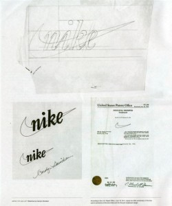
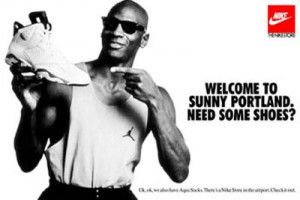

Nike (Найк) является известной во всем мире американской компанией. Это одна из крупнейших компаний моделирующих, производящих и распространяющих спортивную одежду, обувь и аксессуары.
Nike история создания
Появилась компания Nike совсем необычно. В идеале новые фирмы появляются на рынке по двум возможным вариантам. Новая компания либо занимает свободное пространство на рынке, предлагая что-то новое, либо предлагает более качественный по сравнению с конкурентами товар. Уникальностью Nike является то, что при создании компании ее основатель использовал сразу оба варианта.
Фил Найт (Phil Knight) – обыкновенный студент университета Орегона в 1964-м году основывает компанию «Blue Ribbon Sports». Именно эта фирма в дальнейшем превращается в целую империю, которая сейчас известна под именем «Nike».
Какова предыстория Nike? В студенческие годы Фил Найт серьезно интересовался спортом. Он был даже бегуном на средние дистанции в команде университета. Тренером Найта в те годы был Билл Боуермен. В те времена особенного выбора спортивной одежды не было. Профессиональные спортсмены могли себе позволить кроссовки за 30 долларов от компании Adidas, однако рядовые граждане Америки были вынуждены довольствоваться дешевыми и низкокачественными товарами неизвестного происхождения.
Именно тогда Найт решил серьезно поработать над исправлением сложившейся ситуации. Вскоре он разработал не очень сложную, но вполне интересную коммерческую схему. Согласно распространенной легенде на очередном семинаре по маркетингу Найту на ум пришла концепция своей будущей компании. По идеи, Найт должен был заказывать спортивную обувь из Азии и продавать ее в Соединенных Штатах по доступной цене. Именно тогда – в 1964-м году Фил Найт вместе с тренером Биллом Боуерменом сделали первый шаг, создав небольшую фирму, которая называлась «Blue Ribbon Sports».
Спустя некоторое время Найт заключает свой первый контракт с японской компанией «Onitsuka Tiger», которая обязуется шить спортивную обувь для коллег из Соединенных Штатов. Поскольку компания Найта не была зарегистрированной, в первые месяцы продажи товаров осуществлялись на улице, где 26-и летний бизнесмен торговал кроссовками из фургона-микроавтобуса.
Как ни странно, но бизнес Найта стал развиваться большими темпами. За первый год существования компании прибыль основателей составила 8 тысяч долларов. Подсчитав выручку Найт понял, что настало время развиваться и нанимать работников. Вскоре в компании появился менеджер по продажам – Джеф Джонсон, появление которого принесло сразу несколько перемен в компании. Первым изменилось имя.
В честь греческой богини победы «Ники» компанию назвали «Nike».
Второе изменение касалось политики. Джонсон был уверен в том, что продвижение компании впрямую зависит от индивидуального подхода к каждому клиенту. Для этого Джонсон узнавал и записывал телефонные номера всех покупателей, большинство которых были спортсмены, звонил им, спрашивал о качестве приобретенного товара. Его также интересовали дефекты товара, при обнаружении которых Джонсон предлагал новые модели. Джонсон вел целую картотеку, где записывал все отзывы и предложения покупателей. Именно эта стратегия стала залогом успеха компании.
Развитие
Конец 60-х годов прошлого века ознаменовался развитием в истории компании Nike. Именно тогда открылся первый фирменный магазин в городе Санта-Моника в штате Калифорния. В 1968-м году компания выпустила кроссовки нового типа.
Новые модели изготавливались с использованием прогрессивных легких материалов и имели хорошие амортизирующие свойства.
В начале 70-х годов партнер компании в Японии решил, что заокеанская компания зарабатывает очень много. Это было именно так ведь по сравнению с первым годом, компания многократно увеличила годовой доход, который в 1971-м году составил 1.3 миллиона долларов. После этого компания Onitsuka Tiger попробовала выкупить долю американского партнера и подняла цены на поставляемый товар. Найт предугадал подобное развитие событий и до этого успел связаться с другой японской компанией – «Nisho Iwai». Одновременно основатели бренда вместе с менеджером по продажам приняли решение начать собственное производство в Соединенных Штатах. Тем более что у них было все необходимое для успешного старта.
В том же 71-м году компания получила новый логотип, который вскоре должен был стать популярным по всему свету. Автором логотипа стала студентка университета Портленда Каролин Девидсон. Тогда девушка создала знаменитую эмблему в виде росчерка, который символизировал крыло греческой богини почти даром, получив за свою работу 30 долларов. Спустя годы, когда компания набрала обороты, Найт преподнес щедрое вознаграждение. Каролин получила в подарок некоторое количество акций компании и эксклюзивную статуэтку логотипа Nike, которая была усыпана бриллиантами.
Популярность компании выросла после очередного нововведения – кроссовок с «вафельной» подошвой. Производилась подобная подошва по абсолютно новой технологии. Подобная подошва позволяла значительно снижать вес обуви, одновременно увеличивая импульс во время бега. Идея создания революционной технологии принадлежит тренеру Найта. Рассказывается, что Бауермен придумал ее совершенно случайно, когда смотрел на вафельницу жены.
Дебют компании произошел в 1972-м году, когда состоялись олимпийские сборы Соединенных Штатов перед летними Играми.
Следующие годы принесли компании головокружительную славу. В 1978-м году фирма впервые вышла на международный рынок. В следующем году Nike запускает производство спортивной одежды. Над созданием первых моделей одежды работали Найт и его жена.
В те годы фитнесс набирал популярность. Именно это стало основным толчком, который повлиял на продажи обуви Nike с облегченной подошвой, что закрепило позиции компании в мировом рынке.
С того времени компания считала своим главным конкурентом Adidas. Начиная с тех времен, компании соревнуются за главную позицию на рынке спортивной продукции. В 1973-м году Nike удается завоевать половину доли рынка.
Кроссовки Nike Air
Каждый из нас слышал название легендарной серии спортивных кроссовок «Nike Air». Какова же ее история?
В 1979-м году бывший авиаинженер NASA Френк Перис разрабатывает вполне необычный метод изготовления подошвы для кроссовок. Он предлагает свою технологию многим компаниям по производству спортивной обуви и даже Nike, однако ему везде отказывают. Но решительность и настойчивость Периса, в конечном счете, приносят к тому, что компания Nike соглашается использовать метод инженера в производстве.
Инновацией авиаинженера стало то, что он впервые предложил использовать специальную систему амортизации, которая должна была значительно продлить «жизнь» обуви.
Перис не ошибся в своих расчетах, поскольку оказалось, что новая технология не только продлила срок службы кроссовок, но и сделал их удобнее в несколько раз.
Майкл Джордан – звезда компании
Oбщеизвестное правило успешной рекламы гласит, что для хорошего продвижения продукции нужно сотрудничать со звездами. Компания Nike решила лишний раз не экспериментировать и не рисковать, начав сотрудничать со звездами спорта и организациями.
Компания заключила большое число контрактов, однако заключенный в 1985-м году контракт до сих пор считается самым известным и самым скандальным в истории Nike. В эти годы популярность компании стала постепенно снижаться. Именно тогда в Nike решили заключить контракт со звездой НБА Майклом Джорданом. А причиной сложившейся кризисной ситуации был очередной эксперимент компании с производством повседневной обуви, которая так и не нашла покупателей.
Сразу же после подписания контракта с Nike Джордан занялся активной рекламой компании. Кроссовки Nike были на нем не только во время баскетбольных матчей, но и в повседневной жизни. Специально для него компания даже выпускала эксклюзивную серию кроссовок под названием «Air Jordan». Ирония судьбы, однако, была в том, что именно по причине этих кроссовок Джордан постоянно платил штрафы в размере 1000 долларов. Причиной штрафов была черно-красная окраска кроссовок, которая была официально запрещена в НБА. Майк нисколько не смущался от этого, поскольку реклама ему приносила достаточно больший доход.